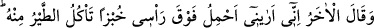
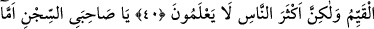

ZİNDAN ARKADAŞLARININ
RÜYALARI
36. Onunla beraber iki genç daha zindana girdi. Onlardan biri dedi ki: “Ben
rüyamda şarap sıktığımı görüyorum.” Öteki de: “Ben de başımın üstünde ekmek
taşıdığımı, kuşların ondan yediğini görüyorum. Bunun yorumunu bize haber ver.
Çünkü biz seni güzel davrananlardan görüyoruz.” dedi.
37. (Yûsuf) şöyle dedi: “Size rızık olarak verilen yemek gelmeden önce onun
yorumunu mutlaka size haber vereceğim. Bu, Rabbimin bana öğrettiklerindendir.
Şüphesiz ben, Allah’a inanmayan, âhireti de inkâr eden bir kavmin dinini terk
ettim.
38. Atalarım İbrahim, İshak ve Yâkub’un dinine uydum. Allah’a herhangi bir şeyi
ortak koşmak bize yaraşmaz. Bu, Allah’ın bize ve insanlara olan lütfundandır.